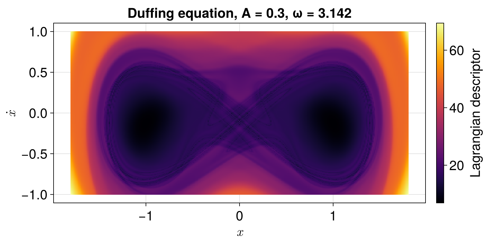
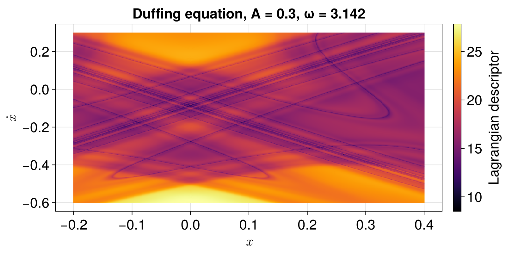
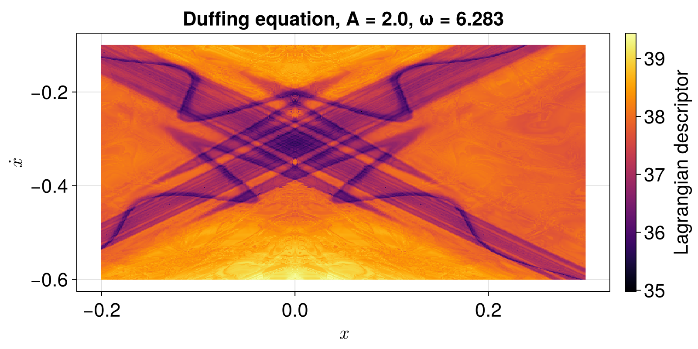
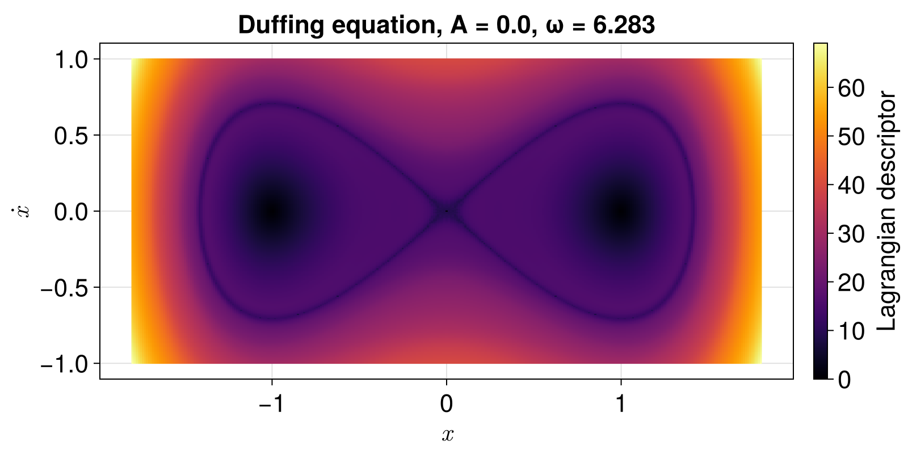
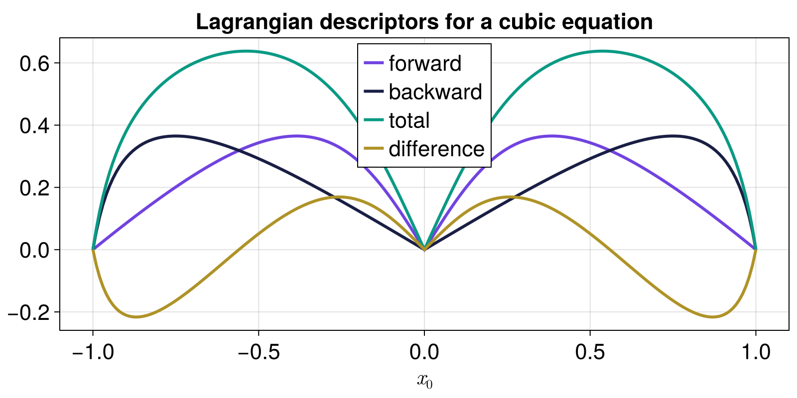

Ordinary Differential Equations
We consider, here, some examples of applying the Lagrangian descriptor method to equations of the type ODEProblem.
Periodically-forced Duffing equation
We start with an application of the method of Lagrangian descriptors to the periodically-forced Duffing equation, as illustrated by Wiggins and García-Garrido (2022). The equation takes the form
\[\ddot x = x - x^3 + A\sin(\omega t).\]
We write it as a system
\[\begin{cases} \dot x = y, \\ \dot y = x - x^3 + A\sin(\omega t). \end{cases}\]
The idea is to set up this system as an ODEProblem from SciML/DifferentialEquations.jl, then wrap it as a LagrangianDescriptorProblem from LagrangianDescriptors.jl, which we can then solve as an ensemble problem and plot the result.
So we first load the relevant packages:
using OrdinaryDiffEq, CairoMakie
using LinearAlgebra: norm
using LagrangianDescriptorsNext we set up the ODEProblem:
function f!(du, u, p, t)
x, y = u
A, ω = p
du[1] = y
du[2] = x - x^3 + A * sin(ω * t)
end
u0 = [0.5, 2.2]
tspan = (0.0, 13.0)
A = 0.3; ω = π; p = (A, ω)
prob = ODEProblem(f!, u0, tspan, p)ODEProblem with uType Vector{Float64} and tType Float64. In-place: true
Non-trivial mass matrix: false
timespan: (0.0, 13.0)
u0: 2-element Vector{Float64}:
0.5
2.2With the ODE problem setup, we choose an infinitesimal Lagrangian descriptor, a collection of initial conditions on the phase space, which is the region to be "painted", and finally we build the LagrangianDescriptorProblem:
M(du, u, p, t) = norm(du)
uu0 = [[x, y] for y in range(-1.0, 1.0, length=301), x in range(-1.8, 1.8, length=301)]
lagprob = LagrangianDescriptorProblem(prob, M, uu0)LagrangianDescriptorProblem for an ODEProblem
initial conditions: 90601 (301 × 301) of type Vector{Float64}
direction: :bothThe Lagrangian descriptors are the time-integration of the infinitesimal descriptor along forward and backward solutions of the equation. They are integrated along with the solutions by "solving" the LagrangianDescriptorProblem, with an overload of the solve method from the SciML ecosystem:
lagsol = solve(lagprob, Tsit5())LagrangianDescriptorSolution
initial conditions: 90601 (301 × 301) of type Vector{Float64}
direction: :bothWith the solution at hand, we plot the Lagrangian descriptors to visualize the dynamics of the system:
fig, ax, plt = heatmap(lagsol; axis = (title = "Duffing equation, A = $A, ω = $(round(ω, digits = 3))",
xlabel = L"x", ylabel = L"\dot{x}"))
Colorbar(fig[1, 2], plt; label = "Lagrangian descriptor")
fig
We may zoom closer to the origin to find the following "painting":
uu0 = [[x, y] for y in range(-0.6, 0.3, length=601), x in range(-0.2, 0.4, length=401)]
lagprob = LagrangianDescriptorProblem(prob, M, uu0)
lagsol = solve(lagprob, Tsit5());
fig, ax, plt = heatmap(lagsol; axis = (title = "Duffing equation, A = $A, ω = $(round(ω, digits = 3))",
xlabel = L"x", ylabel = L"\dot{x}"))
Colorbar(fig[1, 2], plt; label = "Lagrangian descriptor")
fig
If we want to change parameters, we just remake the original ODEProblem:
A = 2.0; ω = 2π; p = (A, ω);
prob = remake(prob, p=p)
uu0 = [[x, y] for y in range(-0.6, -0.1, length=501), x in range(-0.2, 0.3, length=401)]
lagprob = LagrangianDescriptorProblem(prob, M, uu0)
lagsol = solve(lagprob, Tsit5());
fig, ax, plt = heatmap(lagsol; axis = (title = "Duffing equation, A = $A, ω = $(round(ω, digits = 3))",
xlabel = L"x", ylabel = L"\dot{x}"))
Colorbar(fig[1, 2], plt; label = "Lagrangian descriptor")
fig
Autonomous Duffing equation
For visualizing the autonomous case, we may rewrite the system or, since we already have the non-autonomous case implemented, we just set the amplitude of the forcing term to zero:
A = 0.0; ω = 2π; p = (A, ω);
prob = remake(prob, p=p)
uu0 = [[x, y] for y in range(-1.0, 1.0, length=301), x in range(-1.8, 1.8, length=301)]
lagprob = LagrangianDescriptorProblem(prob, M, uu0)
lagsol = solve(lagprob, Tsit5());
fig, ax, plt = heatmap(lagsol; axis = (title = "Duffing equation, A = $A, ω = $(round(ω, digits = 3))",
xlabel = L"x", ylabel = L"\dot{x}"))
Colorbar(fig[1, 2], plt; label = "Lagrangian descriptor")
fig
A scalar cubic equation
Although one-dimensional problems are easier to understand, the method also works for such problems. Here we experiment with the scalar cubic equation
\[ \frac{\mathrm{d}x}{\mathrm{d}t} = x - x^3\]
This equation has three stationary solutions, associated with the fixed points $x=-1$, $x=0$ and $x=1$.
We set up the ODEProblem, loading the packages first:
using OrdinaryDiffEq, CairoMakie
using LinearAlgebra: norm
using LagrangianDescriptors
f(u, p, t) = u - u^3
u0 = 0.5
tspan = (0.0, 1.0)
prob = ODEProblem(f, u0, tspan)ODEProblem with uType Float64 and tType Float64. In-place: false
Non-trivial mass matrix: false
timespan: (0.0, 1.0)
u0: 0.5Build the LagrangianDescriptorProblem:
M(du, u, p, t) = norm(du)
uu0 = range(-1.0, 1.0, length = 201)
lagprob = LagrangianDescriptorProblem(prob, M, uu0)LagrangianDescriptorProblem for an ODEProblem
initial conditions: 201 of type Float64
direction: :bothSolve it:
lagsol = solve(lagprob, Tsit5())LagrangianDescriptorSolution
initial conditions: 201 of type Float64
direction: :bothand plot it:
fig = Figure()
ax = Axis(fig[1, 1]; title = "Lagrangian descriptors for a cubic equation", xlabel = L"x_0")
for direction in (:forward, :backward, :total, :difference)
lines!(ax, lagsol, direction; label = string(direction))
end
axislegend(ax; position = :ct)
fig
In any of the Lagrangian descriptors (forward, backward, total, and difference) we distinguish the two fixed points.